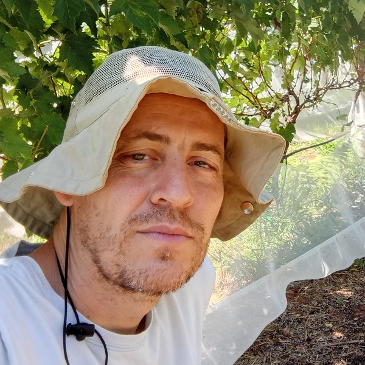

Produzir Não Basta
Gestão de custos e projetos no campo, para quem estuda e para quem produz.

Quem faz
Róberson Macedo de Oliveira é zootecnista e professor do Colégio Politécnico da UFSM, onde ensina gestão de custos e projetos agropecuários. Doutor em Zootecnia pela UFPel, fez estágio pós-doutoral em Economia e Gestão na Universidade da Beira Interior, em Portugal. Antes, foi professor do Instituto Federal Farroupilha por dez anos. Tem interesse em gestão, educação e agroecologia. Currículo Lattes